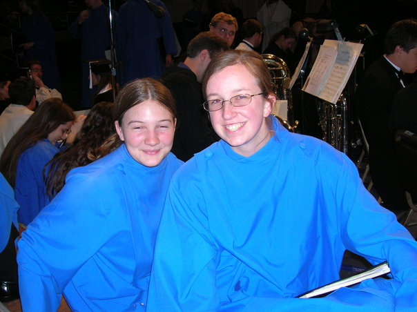

Emma Whitten
A Web 1.0 Summary Series
Name: Emma Rose Whitten
Photo: (pictured left)

Nemesis: Michael Tree (1934 - 2018)
Nemesis reason: Same shade of blue
Aristocrat: No
Artist: 78
Mathematician: I guess
Married: No
Number of dogs with depth perception: :(
Cats who make things possible: certainly not Mapap
Occupation: Organist and also boor from hell
Interests: Being an organist (seriousness TBD); founding museums on eschatology; rock climbing; "probably likes Anthony Newman" - David Ball
Favorite Organ Stop: Vogelgesang
Favorite Island: India
Purchases: Emergency Salad (14 Jun 2021)
Amazon Password: AeolianSkinnerCleevesBriggs2001
Jacket Color: Lavender
Other Jacket Properties: Very Handy
For the record: PayPal is pretty useless.
Parents: Able to build an organ pipe; Unable to answer nasty questions; Of questionable US citizenship.
Favorite Quotation: "We have only had ONE price increase in over 15 years. How many companies can say that????" - Jerry B. Young of Wayne Leupold.
"Aha! Deserted me for Another outdoor music venue!" - W. Wayne Ritchie
"[Y]et no one is as beautiful and fabulous as Emma on a grassy knoll." Manuel Rosales
See also our Web 1.0 Series for Michael Bawtree.